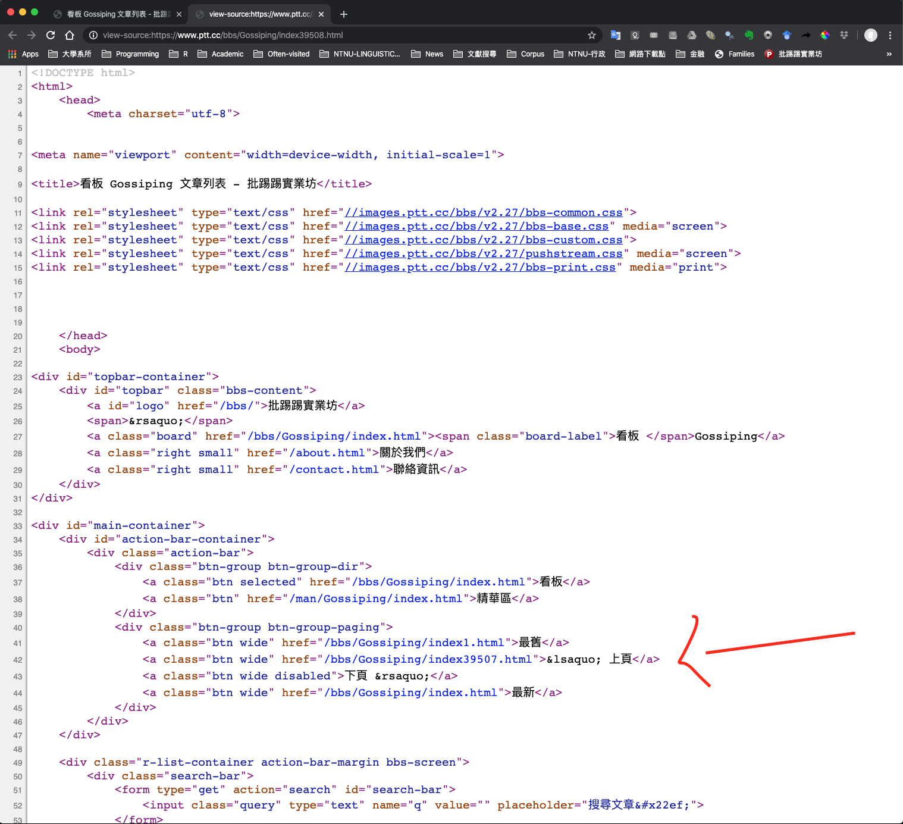
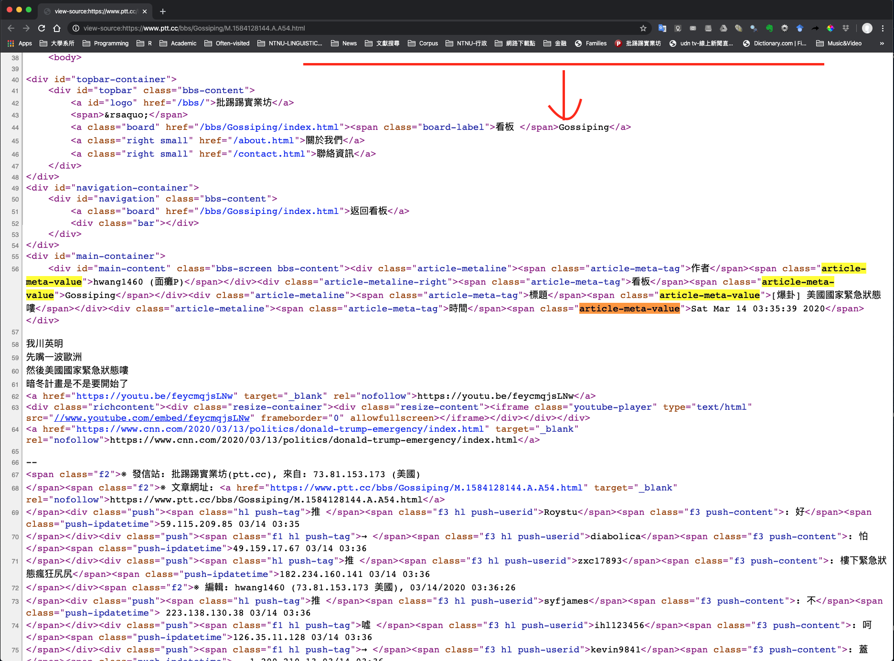
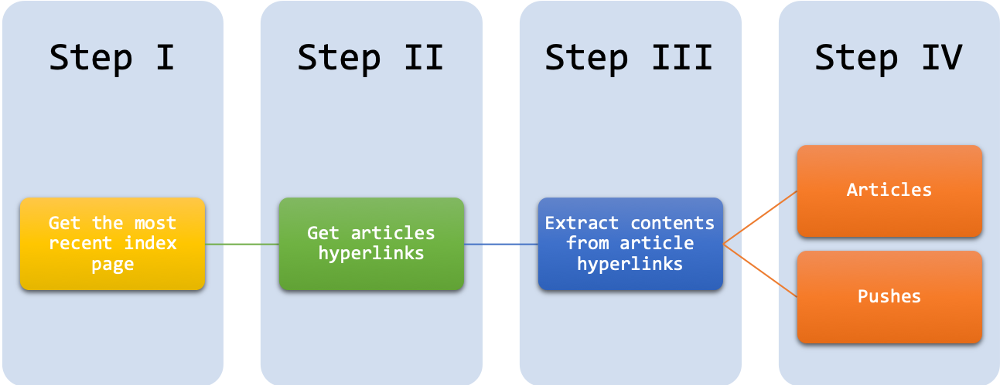

Chapter 3 Creating Corpus
Linguistic data are important to us linguists. Data usually tell us something we don’t know, or something we are not sure of. In this chapter, I would like to show you a quick way to extract lingusitic data from web pages, which is by now undoubtedly the largest source of textual data available.
While there are many existing text data collections (cf. Structured Corpus and XML), chances are that sometimes you still need to collect your own data for a particular research question. But please note that when you are creating your own corpus for specific research questions, always pay attention to the three important criteria: representativeness, authenticity, and size.
Following the spirit of tidy , we will mainly do our tasks with the libraries of tidyverse and rvests.
If you are new to tidyverse R, please check its official webpage for learning resources.
## Uncomment the following line for installation
# install.packages(c("tidyverse", "rvest"))
library(tidyverse)
library(rvest)3.1 HTML Structure
The HyperText Markup Language, or HTML is the standard markup language for documents designed to be displayed in a web browser.
3.1.1 HTML Syntax
To illustrate the structure of the HTML, please download the sample html file from: demo_data/data-sample-html.html and first open it with your browser.
<!DOCTYPE html>
<html>
<head>
<title>My First HTML </title>
</head>
<body>
<h1> Introduction </h1>
<p> Have you ever read the source code of a html page? This is how to get back to the course page: <a href="https://alvinntnu.github.io/NTNU_ENC2036_LECTURES/", target="_blank">ENC2036</a>. </p>
<h1> Contents of the Page </h1>
<p> Anything you can say about the page.....</p>
</body>
</html>An HTML document includes several important elements (cf. Figure 3.1):
DTD: document type definition which informs the browser about the version of the HTML standard that the document adheres to (e.g.,<!DOCTYPE HTML>)element: the combination of start tag, content, and end tag (e.g,<title>My First HTML</title>)tag: named braces that enclose the content and define its structural function (e.g.,title,body,p)attribute: specific properties of the tag, which are often placed in the start end of the element (e.g.,<a href= "index.html"> Homepage </a>). They are expressed asname = "value"pairs.
Figure 3.1: Syntax of An HTML Tag Element
An HTML document starts with the root element <html>, which splits into two branches, <head> and <body>.
- Most of the webpage textual contents would go into the
<body>part. - Most of the web-related codes and metadata (e.g., javascripts, CSS) are often included in the
<head>part.
All elements need to be strictly nested within each other in a well-formed and valid HTML file, as shown in Figure 3.2.
Figure 3.2: Tree Structure of An HTML Document
3.1.3 CSS
Cascading Style Sheet (CSS) is a language for describing the layout of HTML and other markup documents (e.g., XML).
HTML + CSS is by now the standard way to create and design web pages. The idea is that CSS specifies the formats/styles of the HTML elements. The following is an example of the CSS:
div.warnings {
color: pink;
font-family: "Arial"
font-size: 120%
}
h1 {
padding-top: 20px
padding-bottom: 20px
}You probably would wonder how to link a set of CSS style definitions to an HTML document. There are in general three ways: inline, internal and external. You can learn more about this in W3School.com.
Here I will show you an example of the internal method. Below is a CSS style definition for <h1>.
h1 {
color: red;
margin-bottom: 2em;
}We can embed this within a <style>...</style> element. Then you put the entire <style> element under <head> of the HTML file you would like to style.
<style>
h1 {
color: red;
margin-bottom: 1.5em;
}
</style>After you include the <style> in the HTML file, refresh the web page to see if the CSS style works.
3.1.4 HTML + CSS ( + JavaScript)
- Try it:
- HTML: the language for building web pages
- CSS: the language for styling web pages
- JavaScript: the language for programming web pages
3.2 Web Crawling
In the following demonstration, the text data scraped from the PTT forum is presented as it is without adjustment. However, please note that the language on PTT may strike some readers as profane, vulgar or even offensive.
In this tutorial, let’s assume that we like to scrape texts from PTT Forum. In particular, we will demonstrate how to scrape texts from the Gossiping board of PTT.
ptt.url <- "https://www.ptt.cc/bbs/Gossiping"If you use your browser to view PTT Gossiping page, you would see that you need to go through the age verification before you can enter the content page. So, our first job is to pass through this age verification.
- First, we create an
session()(like we open a browser linking to the page)
gossiping.session <- session(ptt.url)- Second, we extract the age verification form from the current page (
formis also a defined HTML element)
gossiping.form <- gossiping.session %>%
html_node("form") %>%
html_form- Then we automatically submit an
yesto the age verification form in the earlier createdsession()and create another session.
gossiping <- session_submit(
x = gossiping.session,
form = gossiping.form,
submit = "yes"
)
gossiping<session> https://www.ptt.cc/bbs/Gossiping/index.html
Status: 200
Type: text/html; charset=utf-8
Size: 11992Now our html sesseion, i.e., gossiping, should be on the front page of the Gossiping board.
Most browsers come with the functionality to inspect the page source (i.e., HTML). This is very useful for web crawling. Before we scrape data from the webpage, we often need to inspect the structure of the web page first. Most importantly, we need to know (a) which HTML elements, or (b) which particular attributes/values of the HTML elements we are interested in .

- Next we need to find the most recent index page of the board
# Decide the number of index pages ----
page.latest <- gossiping %>%
html_nodes("a") %>% # extract all <a> elements
html_attr("href") %>% # extract the attributes `href`
str_subset("index[0-9]{2,}\\.html") %>% # find the `href` with the index number
str_extract("[0-9]+") %>% # extract the number
as.numeric()
page.latest[1] 39383- On the most recent index page, we need to extract the hyperlinks to the articles
# Retreive links -----
link <- str_c(ptt.url, "/index", page.latest, ".html")
links.article <- gossiping %>%
session_jump_to(link) %>% # move session to the most recent page
html_nodes("a") %>% # extract article <a>
html_attr("href") %>% # extract article <a> `href` attributes
str_subset("[A-z]\\.[0-9]+\\.[A-z]\\.[A-z0-9]+\\.html") %>% # extract links
str_c("https://www.ptt.cc",.)
links.article [1] "https://www.ptt.cc/bbs/Gossiping/M.1645730508.A.2D7.html"
[2] "https://www.ptt.cc/bbs/Gossiping/M.1645730711.A.F21.html"
[3] "https://www.ptt.cc/bbs/Gossiping/M.1645730718.A.423.html"
[4] "https://www.ptt.cc/bbs/Gossiping/M.1645730747.A.597.html"
[5] "https://www.ptt.cc/bbs/Gossiping/M.1645731541.A.B77.html"
[6] "https://www.ptt.cc/bbs/Gossiping/M.1645731566.A.917.html"
[7] "https://www.ptt.cc/bbs/Gossiping/M.1645731566.A.94C.html"
[8] "https://www.ptt.cc/bbs/Gossiping/M.1645731738.A.A20.html"
[9] "https://www.ptt.cc/bbs/Gossiping/M.1645731812.A.4FC.html"
[10] "https://www.ptt.cc/bbs/Gossiping/M.1645731816.A.8D1.html"
[11] "https://www.ptt.cc/bbs/Gossiping/M.1645732420.A.F1D.html"
[12] "https://www.ptt.cc/bbs/Gossiping/M.1645732748.A.AE5.html"
[13] "https://www.ptt.cc/bbs/Gossiping/M.1645732794.A.FB6.html"
[14] "https://www.ptt.cc/bbs/Gossiping/M.1645732977.A.A16.html"
[15] "https://www.ptt.cc/bbs/Gossiping/M.1645733138.A.FF6.html"
[16] "https://www.ptt.cc/bbs/Gossiping/M.1645733201.A.AF0.html"
[17] "https://www.ptt.cc/bbs/Gossiping/M.1645733610.A.E13.html"
[18] "https://www.ptt.cc/bbs/Gossiping/M.1645733783.A.533.html"
[19] "https://www.ptt.cc/bbs/Gossiping/M.1645733830.A.A56.html"- Next step is to scrape texts from each article hyperlink. Let’s consider one link first.
article.url <- links.article[1]
temp.html <- gossiping %>%
session_jump_to(article.url) # link to the article- Now the
temp.htmlis like a browser on the article page. Because we are interested in the metadata and the contents of each article, now the question is: where are they in the HTML? We need to go back to the source page of the article HTML again:

- After a closer inspection of the article HTML, we know that:
- The metadata of the article are included in
<span>tag elements, belonging to the classclass="article-meta-value" - The contents of the article are included in the
<div>element, whose ID isID="main-content"
- The metadata of the article are included in
- Now we are ready to extract the metadata of the article.
# Extract article metadata
article.header <- temp.html %>%
html_nodes("span.article-meta-value") %>% # get <span> of a particular class
html_text()
article.header[1] "luganzhin (luganzhin)"
[2] "Gossiping"
[3] "Re: [問卦] 逢甲碟仙預言的民國116年就要來了耶"
[4] "Fri Feb 25 03:21:46 2022" The metadata of each PTT article in fact includes four pieces of information: author, board name, title, post time. The above code retrieves directly the values of these metadata.
We can retrieve the tags of these metadata values as well:
temp.html %>%
html_nodes("span.article-meta-tag") %>% # get <span> of a particular class
html_text()[1] "作者" "看板" "標題" "時間"- From the
article.header, we are able to extract theauthor,title, andtime stampof the article.
article.author <- article.header[1] %>% str_extract("^[A-z0-9_]+") # athuor
article.title <- article.header[3] # title
article.datetime <- article.header[4] # time stamp
article.author[1] "luganzhin"article.title[1] "Re: [問卦] 逢甲碟仙預言的民國116年就要來了耶"article.datetime[1] "Fri Feb 25 03:21:46 2022"- Now we extract the main contents of the article
article.content <- temp.html %>%
html_nodes( # article body
xpath = '//div[@id="main-content"]/node()[not(self::div|self::span[@class="f2"])]'
) %>%
html_text(trim = TRUE) %>% # extract texts
str_c(collapse = "") # combine all lines into one
article.content[1] "江湖術士A：2022會出問題\n\n江湖術士B：2023會出問題\n\n江湖術士C：2024會出問題\n\n江湖術士D：2025-2027會出問題\n\n江湖術士E：2027-2030會出問題\n\n江湖術士F：2030-2050會出問題\n\n江湖術士G：2050以後會出問題\n\n江湖術士H：不會出問題\n\n最後，江湖術士說中了\n\n眾人：江湖術士準耶: 各位還記得逢甲碟仙事件嗎: 當年預言民國116年會統一: 也就是西元2027年: 看看時間不遠了: 看看眼前的這些事: 會不會: 碟仙: 說的: 都是真的呢: 怕不怕: 怕就推......--"
XPath (or XML Path Language) is a query language which is useful for addressing and extracting particular elements from XML/HTML documents. XPath allows you to exploit more features of the hierarchical tree that an HTML file represents in locating the relevant HTML elements. For more information, please see Munzert et al. (2014), Chapter 4.
In the above example, the XPath identifies the nodes under <div id = “main-content”>, but excludes sister nodes that are <div> or <span class=“f2”>.
These children <div> or <span class=“f2”> of the <div id = “main-content”> include the push comments (推文) of the article, which are not the main content of the article.
- Now we combine all information related to the article into a data frame
article.table <- tibble(
datetime = article.datetime,
title = article.title,
author = article.author,
content = article.content,
url = article.url
)
article.table- Next we extract the push comments at the end of the article
article.push <- temp.html %>%
html_nodes(xpath = "//div[@class = 'push']")
article.push{xml_nodeset (9)}
[1] <div class="push">\n<span class="f1 hl push-tag">→ </span><span class="f3 ...
[2] <div class="push">\n<span class="f1 hl push-tag">噓 </span><span class="f3 ...
[3] <div class="push">\n<span class="f1 hl push-tag">→ </span><span class="f3 ...
[4] <div class="push">\n<span class="f1 hl push-tag">→ </span><span class="f3 ...
[5] <div class="push">\n<span class="f1 hl push-tag">→ </span><span class="f3 ...
[6] <div class="push">\n<span class="f1 hl push-tag">→ </span><span class="f3 ...
[7] <div class="push">\n<span class="f1 hl push-tag">→ </span><span class="f3 ...
[8] <div class="push">\n<span class="hl push-tag">推 </span><span class="f3 hl ...
[9] <div class="push">\n<span class="hl push-tag">推 </span><span class="f3 hl ...We then extract relevant information from each push nodes
article.push.- push types
- push authors
- push contents
# push tags
push.table.tag <- article.push %>%
html_nodes("span.push-tag") %>%
html_text(trim = TRUE) # push types (like or dislike)
push.table.tag[1] "→" "噓" "→" "→" "→" "→" "→" "推" "推"# push authors
push.table.author <- article.push %>%
html_nodes("span.push-userid") %>%
html_text(trim = TRUE) # author
push.table.author[1] "ispy03532003" "YingJiou5566" "CHENXOX" "CHENXOX" "CHENXOX"
[6] "CHENXOX" "CHENXOX" "rushfudge" "SpiritDodge" # push contents
push.table.content <- article.push %>%
html_nodes("span.push-content") %>%
html_text(trim = TRUE)
push.table.content[1] ": 奧義‧全範圍打擊之術"
[2] ": 我看你是完全不懂喔"
[3] ": 說真的 這故事上窩不4不相信16統一 窩"
[4] ": 壓根就他媽的不相信有碟仙啊 小時候跟"
[5] ": 窩灣的都很無聊 因為林北都用力按死死"
[6] ": 看那個87反映怪怪的想帶風向還動不了很"
[7] ": 好笑"
[8] ": 嘻嘻"
[9] ": 以前還說100年咧！" # push time
push.table.datetime <- article.push %>%
html_nodes("span.push-ipdatetime") %>%
html_text(trim = TRUE) # push time stamp
push.table.datetime[1] "42.74.247.103 02/25 03:23" "98.42.169.238 02/25 03:36"
[3] "1.171.147.73 02/25 03:36" "1.171.147.73 02/25 03:36"
[5] "1.171.147.73 02/25 03:37" "1.171.147.73 02/25 03:37"
[7] "1.171.147.73 02/25 03:37" "223.138.203.141 02/25 03:41"
[9] "114.35.37.7 02/25 03:50" - Finally, we combine all into one Push data frame.
push.table <- tibble(
tag = push.table.tag,
author = push.table.author,
content = push.table.content,
datetime = push.table.datetime,
url = article.url)
push.table3.3 Functional Programming
It should now be clear that there are several routines that we need to do again and again if we want to collect text data in large amounts:
- For each index page, we need to extract all the article hyperlinks of the page.
- For each article hyperlink, we need to extract the article content, metadata, and the push comments.
So, it would be great if we can wrap these two routines into two functions.
3.3.1 extract_art_links()
extract_art_links(): This function takes an HTML sessionsessionand an index page of the PTT Gossipingindex_pageas the arguments and extract all article links from the index page. It returns a vector of article links.
extract_art_links <- function(index_page, session){
links.article <- session %>%
session_jump_to(index_page) %>%
html_nodes("a") %>%
html_attr("href") %>%
str_subset("[A-z]\\.[0-9]+\\.[A-z]\\.[A-z0-9]+\\.html") %>%
str_c("https://www.ptt.cc",.)
return(links.article)
}For example, we can extract all the article links from the most recent index page:
# Get index page
cur_index_page <- str_c(ptt.url, "/index", page.latest, ".html")
# Get all article links from the most recent index page
cur_art_links <-extract_art_links(cur_index_page, gossiping)
cur_art_links [1] "https://www.ptt.cc/bbs/Gossiping/M.1645730508.A.2D7.html"
[2] "https://www.ptt.cc/bbs/Gossiping/M.1645730711.A.F21.html"
[3] "https://www.ptt.cc/bbs/Gossiping/M.1645730718.A.423.html"
[4] "https://www.ptt.cc/bbs/Gossiping/M.1645730747.A.597.html"
[5] "https://www.ptt.cc/bbs/Gossiping/M.1645731541.A.B77.html"
[6] "https://www.ptt.cc/bbs/Gossiping/M.1645731566.A.917.html"
[7] "https://www.ptt.cc/bbs/Gossiping/M.1645731566.A.94C.html"
[8] "https://www.ptt.cc/bbs/Gossiping/M.1645731738.A.A20.html"
[9] "https://www.ptt.cc/bbs/Gossiping/M.1645731812.A.4FC.html"
[10] "https://www.ptt.cc/bbs/Gossiping/M.1645731816.A.8D1.html"
[11] "https://www.ptt.cc/bbs/Gossiping/M.1645732420.A.F1D.html"
[12] "https://www.ptt.cc/bbs/Gossiping/M.1645732748.A.AE5.html"
[13] "https://www.ptt.cc/bbs/Gossiping/M.1645732794.A.FB6.html"
[14] "https://www.ptt.cc/bbs/Gossiping/M.1645732977.A.A16.html"
[15] "https://www.ptt.cc/bbs/Gossiping/M.1645733138.A.FF6.html"
[16] "https://www.ptt.cc/bbs/Gossiping/M.1645733201.A.AF0.html"
[17] "https://www.ptt.cc/bbs/Gossiping/M.1645733610.A.E13.html"
[18] "https://www.ptt.cc/bbs/Gossiping/M.1645733783.A.533.html"
[19] "https://www.ptt.cc/bbs/Gossiping/M.1645733830.A.A56.html"3.3.2 extract_article_push_tables()
extract_article_push_tables(): This function takes an article linklinkas the argument and extracts the metadata, textual contents, and pushes of the article. It returns a list of two elements—article and push data frames.
extract_article_push_tables <- function(link){
article.url <- link
temp.html <- gossiping %>% session_jump_to(article.url) # link to the www
# article header
article.header <- temp.html %>%
html_nodes("span.article-meta-value") %>% # meta info regarding the article
html_text()
# article meta
article.author <- article.header[1] %>% str_extract("^[A-z0-9_]+") # athuor
article.title <- article.header[3] # title
article.datetime <- article.header[4] # time stamp
# article content
article.content <- temp.html %>%
html_nodes( # article body
xpath = '//div[@id="main-content"]/node()[not(self::div|self::span[@class="f2"])]'
) %>%
html_text(trim = TRUE) %>%
str_c(collapse = "")
# Merge article table
article.table <- tibble(
datetime = article.datetime,
title = article.title,
author = article.author,
content = article.content,
url = article.url
)
# push nodes
article.push <- temp.html %>%
html_nodes(xpath = "//div[@class = 'push']") # extracting pushes
# NOTE: If CSS is used, div.push does a lazy match (extracting div.push.... also)
# push tags
push.table.tag <- article.push %>%
html_nodes("span.push-tag") %>%
html_text(trim = TRUE) # push types (like or dislike)
# push author id
push.table.author <- article.push %>%
html_nodes("span.push-userid") %>%
html_text(trim = TRUE) # author
# push content
push.table.content <- article.push %>%
html_nodes("span.push-content") %>%
html_text(trim = TRUE)
# push datetime
push.table.datetime <- article.push %>%
html_nodes("span.push-ipdatetime") %>%
html_text(trim = TRUE) # push time stamp
# merge push table
push.table <- tibble(
tag = push.table.tag,
author = push.table.author,
content = push.table.content,
datetime = push.table.datetime,
url = article.url
)
# return
return(list(article.table = article.table,
push.table = push.table))
}#endfuncFor example, we can get the article and push tables from the first article link:
extract_article_push_tables(cur_art_links[1])$article.table
# A tibble: 1 × 5
datetime title author content url
<chr> <chr> <chr> <chr> <chr>
1 Fri Feb 25 03:21:46 2022 Re: [問卦] … luganzh… "江湖術士A：2022… https://www.…
$push.table
# A tibble: 9 × 5
tag author content datetime url
<chr> <chr> <chr> <chr> <chr>
1 → ispy03532003 : 奧義‧全範圍打擊之術 42.74.247… https://…
2 噓 YingJiou5566 : 我看你是完全不懂喔 98.42.169… https://…
3 → CHENXOX : 說真的 這故事上窩不4不相信16統一 窩 1.171.147… https://…
4 → CHENXOX : 壓根就他媽的不相信有碟仙啊 小時候跟 1.171.147… https://…
5 → CHENXOX : 窩灣的都很無聊 因為林北都用力按死死 1.171.147… https://…
6 → CHENXOX : 看那個87反映怪怪的想帶風向還動不了很 1.171.147… https://…
7 → CHENXOX : 好笑 1.171.147… https://…
8 推 rushfudge : 嘻嘻 223.138.2… https://…
9 推 SpiritDodge : 以前還說100年咧！ 114.35.37… https://…3.3.3 Streamline the Codes
Now we can simplify our codes quite a bit:
# Get index page
cur_index_page <- str_c(ptt.url, "/index", page.latest, ".html")
# Scrape all article.tables and push.tables from each article hyperlink
cur_index_page %>%
extract_art_links(session = gossiping) %>%
map(extract_article_push_tables) -> ptt_data# number of articles on this index page
length(ptt_data)[1] 19# Check the first contents of 1st hyperlink
ptt_data[[1]]$article.tableptt_data[[1]]$push.table- Finally, the last thing we can do is to combine all article tables from each index page into one; and all push tables into one for later analysis.
# Merge all article.tables into one
article.table.all <- ptt_data %>%
map(function(x) x$article.table) %>%
bind_rows
# Merge all push.tables into one
push.table.all <- ptt_data %>%
map(function(x) x$push.table) %>%
bind_rows
article.table.allpush.table.all
There is still one problem with the Push data frame. Right now it is still not very clear how we can match the pushes to the articles from which they were extracted. The only shared index is the url. It would be better if all the articles in the data frame have their own unique indices and in the Push data frame each push comment corresponds to a particular article index.
The following graph summarizes our work flowchart for PTT Gossipping Scraping:

3.4 Save Corpus
You can easily save your scraped texts in a CSV format.
# Save ------
write_csv(article.table, path = "PTT_GOSSIPPING_ARTICLE.csv")
write_csv(push.table, path = "PTT_GOSSIPPING_PUSH.csv")3.5 Additional Resources
Collecting texts and digitizing them into machine-readable files is only the initial step for corpus construction. There are many other things that need to be considered to ensure the effectiveness and the sustainability of the corpus data. In particular, I would like to point you to a very useful resource, Developing Linguistic Corpora: A Guide to Good Practice, compiled by Martin Wynne. Other important issues in corpus creation include:
- Adding linguistic annotations to the corpus data (cf. Leech’s Chapter 2)
- Metadata representation of the documents (cf. Burnard’s Chapter 4)
- Spoken corpora (cf. Thompson’s Chapter 5)
- Technical parts for corpus creation (cf. Sinclair’s Appendix)
3.6 Final Remarks
- Please pay attention to the ethical aspects involved in the process of web crawling (esp. with personal private matters).
- If the website has their own API built specifically for one to gather data, use it instead of scraping.
- Always read the terms and conditions provided by the website regarding data gathering.
- Always be gentle with the data scraping (e.g., off-peak hours, spacing out the requests)
- Value the data you gather and treat the data with respect.
Exercise 3.2 Please utilize the code from Exercise 3.1 and collect all texts on PTT/Gossipings from 3 index pages. Please have the articles saved in PTT_GOSSIPING_ARTICLE.csv and the pushes saved in PTT_GOSSIPING_PUSH.csv under your working directory.
Also, at the end of your code, please also output in the Console the corpus size, including both the articles and the pushes. Please provide the total number of characters of all your PTT text data collected (Note: You DO NOT have to do the word segmentation yet. Please use the characters as the base unit for corpus size.)
Hint:nchar()
Your script may look something like:
# I define my own `scrapePTT()` function:
# ptt_url: specify the board to scrape texts from
# num_index_page: specify the number of index pages to be scraped
# return: list(article, push)
PTT_data <-scrapePTT(ptt_url = "https://www.ptt.cc/bbs/Gossiping", num_index_page = 3)
PTT_data$article %>% headPTT_data$push %>% head# corpus size
PTT_data$article$content %>% nchar %>% sum[1] 25633Exercise 3.3 Please choose a website (other than PTT) you are interested in and demonstrate how you can use R to retrieve textual data from the site. The final scraped text collection could be from only one static web page. This purpose of this exercise is to show that you know how to parse the HTML structure of the web page and retrieve the data you need from the website.